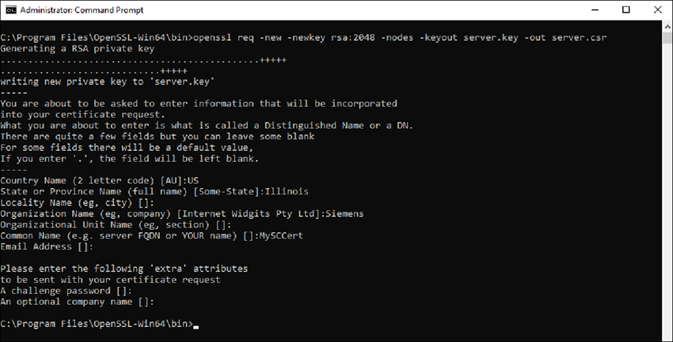
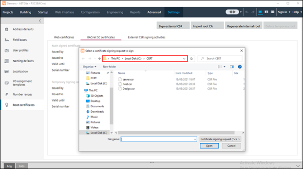
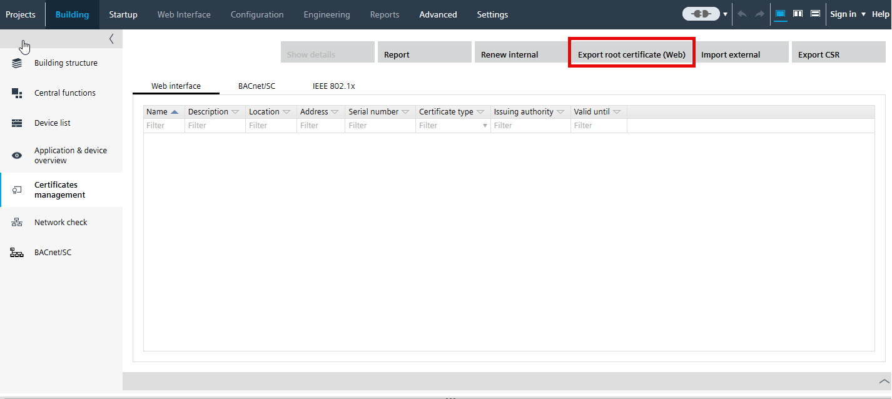
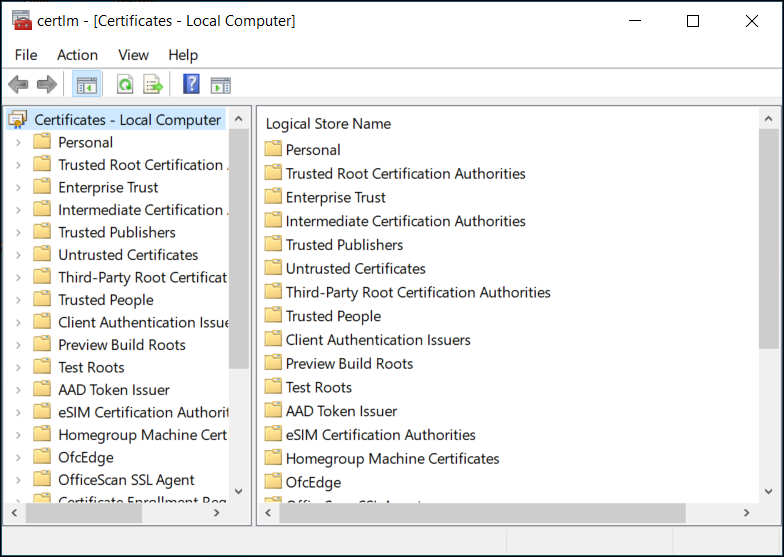
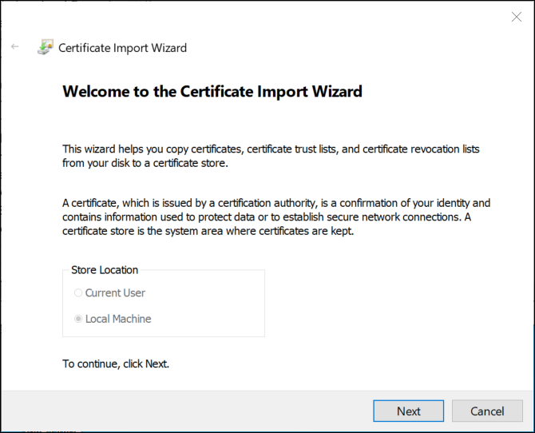
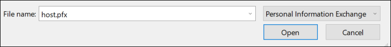
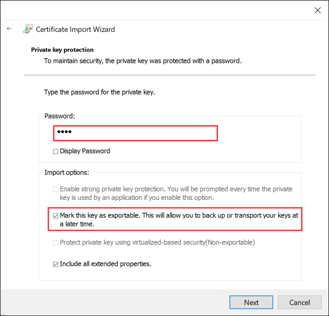
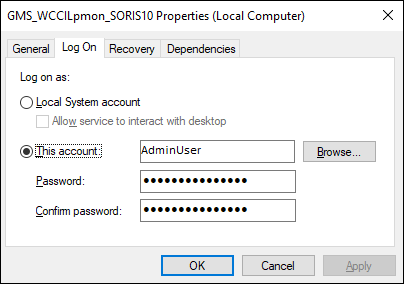

Creating and Importing Certificates for BACnet/SC
BACnet/SC is compatible with the following operating systems and editions:
- Microsoft Windows 10 64-bit (Professional and Enterprise)
- Microsoft Windows Server 2016 64-bit (Build 1709 and later) (Not supported in Desigo CC V6.x)
NOTE: If, for example, you try to import the .pfx file in Windows Server 2016 Build 1607, an “invalid password” error displays. - Microsoft Windows Server 2019 64-bit
- Microsoft Windows Server 2022 64-bit
Complete the following procedures only if you want to configure BT BACnet Stack using the BACnet Secure Connect (BACnet/SC) Protocol.
BACnet/SC uses certificates to encrypt your BACnet data during transmission over the network. Two certificates comprise the SC configuration. One is the Certificate Authority (CA or root) certificate provided to you from ABT or a third-party vendor. The other certificate is the host (operational) certificate for Desigo CC signed by the CA certificate. The operational certificate is needed to make Desigo CC a part of the encrypted BACnet/SC system.
For Siemens Devices with ABT
ABT can be installed on the computer running Desigo CC or it can be installed on another computer.
For Third-Party Devices
Different vendors will have their own procedures for creating and importing certificates if Desigo CC is going to connect to a vendor’s SC hub.
After you generate a .csr file, give it to the third party. They must provide a signed certificate and the CA (root) certificate.
Download Win64 OpenSSL
- Install the Win64 version of OpenSSL (3.0.15 or later): https://openssl-library.org
Generate Certificate Signing Request
- On your management station, run the Command Prompt as an administrator, go to the installed OpenSSL directory, C:\program files\OpenSSL-win64\bin, and enter the following command:
openssl req –new –newkey rsa:2048 –nodes –keyout server.key –out server.csr
When prompted, complete the fields for your certificate. Do not enter a challenge password. Provide a Common Name such as MyBACnetSCCert.
- A server.csr file is created, which you can use in ABT or provide to a third party to sign.
- Sign the certificate in ABT. (As a CA, ABT signs the public key by its private key and provides a host certificate in .cer format.) Copy the generated .cer file to your OpenSSL directory.
NOTE: Third-party vendors can skip this step.
- To form a chain of trust, in ABT click Export root certificate to get a root certificate of the CA.
NOTE: Third-party vendors can skip this step.
- A [project name].crt file is created and copied to your OpenSSL directory.
- For both ABT and third-party vendors, at the Command Prompt on the Desigo CC management station, go to the OpenSSL directory, and enter the following command to generate a .pfx file from the .cer and .key.
openssl pkcs12 –export –in server.cer –inkey server.key –out server.pfx
Import Certificates for BACnet/SC on the Desigo CC Management Stations
- In Windows Search, enter manage computer certificates (not manage user certificates), and run the application.
The Microsoft Management Console Certificates dialog box displays.
- In the Certificates tree, right-click Trusted Root Certification Authorities, and select All Tasks > Import.
The Welcome to the Certificate Import Wizard dialog box displays.
- Click Next.
The File to Import dialog box displays. - Click Browse, select the root (CA) .crt certificate from ABT or the third-party vendor, click Open, and then click Next.
The Certificate Store dialog displays.
- Accept the default store location, and click Next.
- Click Finish, and then click OK.
- In the Certificates tree, right-click Personal, and select All Tasks > Import.
The Welcome to the Certificate Import Wizard dialog box displays. - Click Next.
The File to Import dialog box displays. - Click Browse, and select a host certificate (file type pfx).

- Click Open, and then click Next.
The Private Key Protection dialog displays.
- If there is a password for this certificate, enter it. Select Mark this key as exportable, and then click Next.
NOTE: Do not enable strong private key protection. If your security policy automatically enables it, you must modify the Windows service that runs the Desigo CC services to run in a user account with Administrative rights or privileges.
- In the Certificate Store dialog box, accept the default store, and then click Next.
- Click Finish, and then click OK.
- The two certificates you imported are ready to be used when you configure the BT BACnet Stack.
- In the OpenSSL directory, delete or secure the server.key.